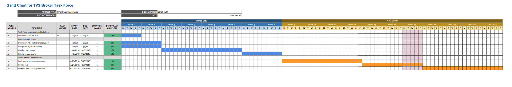

these webpages are a work in progres... .
In the meantime you can find out about us on the LSST TVS wiki
TVS Task Force
Characterize the functionality needed from a community-broker interface
Work Plan
2018 Survey Results |
How fast do you really need alerts? |
Members:
| Francisco Förster Buron, CMM-UChile / MAS | |
| Suvi Gezari, University of Maryland | |
| Melissa Graham, University of Washington/LSST | |
| Ashish Mahabal, Caltech | |
| Gautham Narayan, STScI | Questionnaire team |
| Markus Rabus, PUC, Chile | Spokesperson |
| Keivan Stassun, Vanderbilt University | Questionnaire team |
| Paula Szkody, University of Washington | Questionnaire team |
| Rachel Street, Las Cumbres Observatory | Chair, Questionnaire team |
| Stephen Smartt, Queen’s University Belfast | |
| Ken Smith, Queen’s University Belfast |
Context
The LSST Data Management (DM) software will deliver an alert package for every object in each image which exhibits some photometric or positional change. The scale of the survey leads us to anticipate millions of alerts per night and hence a computational challenge for astronomers to identify targets of specific interest for their science. In this context, we refer to a ‘broker’ as software which receives alert information, associates it with other data, performs classification functions according to numerous algorithms and criteria, and stores the information in a database. Brokers may issue secondary alerts, and may provide interfaces to enable users to sort targets and alters according to their own preferences. These users may be individual scientists, teams, or additional brokers working at a level of finer detail. They may also be accessed by many instances of Target/Observation Manager software, which are designed to prioritizing targets for a specific science goal, request follow-up observations, tracking progress and analyze the results.
While some astronomers are accustomed to responding to alerts and conducting ‘reactive’ follow-up observations in real-time, for many scientists this mode of operation is unfamiliar, making it difficult for them to envision how they will exploit LSST.
Meanwhile, substantial development of broker facilities is ongoing, including ANTARES (NOAO), Lasair (LSST:UK), ALeRCE (Chile). To maximize the science return from LSST as a whole, the user interfaces to these brokers need to be carefully designed to address the needs of the community.
Task Force (TF) Goals
- Stimulate scientists from all fields in astronomy to think through how they will extract targets of interest from LSST, what information and data products they will require at each stage, timescales of delivery and modes of interaction with brokers.
- Derive and document Scientific and Functional & Performance requirements
Work Plan and Deliverables

{kind=link}
| Deadline | Milestone |
|---|---|
| March 9, 2018 | Deliver completed broker ecosystem document |
| March 9, 2018 | Deliver completed survey questionnaire |
| April 20, 2018 | Completed summary of survey responses and statistics |
| May 18, 2018 | Complete v1.0 of Science Requirements document |
| June 4-8, 2018 | Review v1.0 Science Requirements with broker developers, discussion session at TVS workshop |
| July 6, 2018 | Complete v2.0 Science Requirements document |